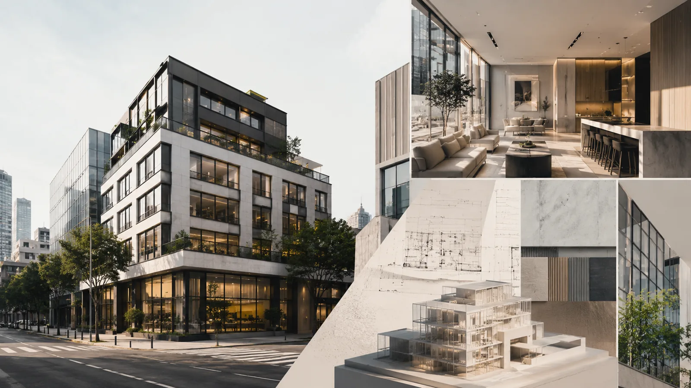

건물관리를 바탕으로, 공실을 관리하고 해결하고, 자산가치를 올립니다
주업은 건물관리(시설관리 FM · 자산관리 PM)입니다. 그 위에 공실관리·임차사관리를 얹어 건물이 비지 않게 하고, 임대로 채워지지 않는 공간은 직접 개발해 수익공간으로 바꿉니다. 최종 목표는 건물의 자산가치 증대이며, 어느 단계에서든 들어오실 수 있습니다.

세 묶음, 일곱 가지 사업영역
아래층이 없으면 위층은 서지 않습니다. 관리가 되어야 공실이 관리되고, 공실이 관리되어야 개발과 자산가치 증대가 가능합니다. 일곱 영역은 그 순서대로 놓여 있습니다.
1건물관리 매일 돌아가게 하는 일 · 회사의 주업
2공실 · 임차사 비지 않게, 비면 빨리 채우는 일
3개발 · 밸류업 실행 자산가치를 올리는 일
인테리어 · 디자인 PM
디자인 기획, 견적 검토, 업체 선정, 공정·품질·예산 관리. 건물주 편의 PM으로 공사 리스크를 낮추고 수익성을 지킵니다. 시공은 등록 전문업체가 맡습니다.
자세히공간운영 · 수익화 · 브랜딩
오픈 세팅, 운영 매뉴얼, 무인화·자동화, 위탁운영, 공간 브랜드와 유입 구조 기획. 공실을 장기임대만이 아닌 단기·다목적 수익공간으로 운영합니다.
자세히노후건물 개선 · 그린 밸류업
노후건축물의 에너지·설비·외피 개선과 수익성 개선을 하나의 PM으로 묶습니다. 운영비가 얼마나 줄고 임대경쟁력에 어떤 영향을 주는지를 기준으로 공사 순서를 정합니다.
자세히지유공간개발이 집중하는 다섯 가지
일곱 사업영역을 회사가 성장할 방향에 맞춰 다시 묶으면 다섯 개의 축이 됩니다. 앞의 세 가지가 최우선이고, 뒤의 두 가지는 주력으로 키워가는 영역입니다.
| 축 | 하는 일 | 연결되는 사업영역 | 우선순위 |
|---|---|---|---|
| GU Value-Up | 공실·노후·저활용 부동산의 사업성·공간·운영을 통합 개선해 자산가치를 올리는 회사의 본체 | 공실관리 · 공실개발 · 인테리어 PM | 최우선 |
| Building Intelligence | 관리·임대차·공실·수익·에너지·공사비 데이터를 지표와 의사결정 리포트로 정리 | 자산관리 PM 월간 보고 · 공실개발 진단 리포트 | 최우선 |
| Smart Building | 중소형 빌딩에 맞춘 원격·표준화·디지털 방식의 시설관리 | 시설관리 FM | 최우선 |
| Green Value-Up | 노후건축물의 에너지·설비·외피 개선을 임대경쟁력·운영비와 연결 | 노후건물 개선 | 주력 육성 |
| Space Revenue | 공실을 시간·일·프로젝트 단위 수익공간으로 운영 | 공간운영 · 수익화 · 브랜딩 | 주력 육성 |
표가 잘리면 옆으로 밀어서 보실 수 있습니다.
앞으로 넓혀갈 영역
당장 주력으로 만들기보다, 시장과 파트너가 검증되는 순서대로 확장할 영역입니다. 초기에는 자산을 직접 사거나 운영하지 않고, 소유자와 투자자의 실행 파트너로 참여합니다.
문제가 있어 싸게 거래되는 자산의 밸류업
경매·NPL·법인 유휴자산·상속 건물·운영을 멈춘 숙박시설을 대상으로 매입 전 진단, 리뉴얼 예산, 공실 개선, 운영모델, 매각 시나리오를 제공하고 매입 후 실제 밸류업을 맡습니다.
시니어 공간 전환
고령 인구가 늘면서 기존 모텔·연수원·근생·업무시설을 시니어 주거·커뮤니티·생활지원 공간으로 바꾸는 개발 PM입니다. 의료·요양·돌봄 운영은 전문기관이 맡고, 지유는 부동산 확보·진단·사업성·리모델링·공간기획·시설관리를 맡는 구조를 검토합니다.
공공 · 지역 유휴공간 재생
지자체·공공기관·지역단체가 보유한 유휴공간을 교육·창업·커뮤니티·문화·지역상권과 연결하는 프로젝트입니다. 수익성보다 레퍼런스와 공공 협력, 지역 확장성의 가치를 봅니다.